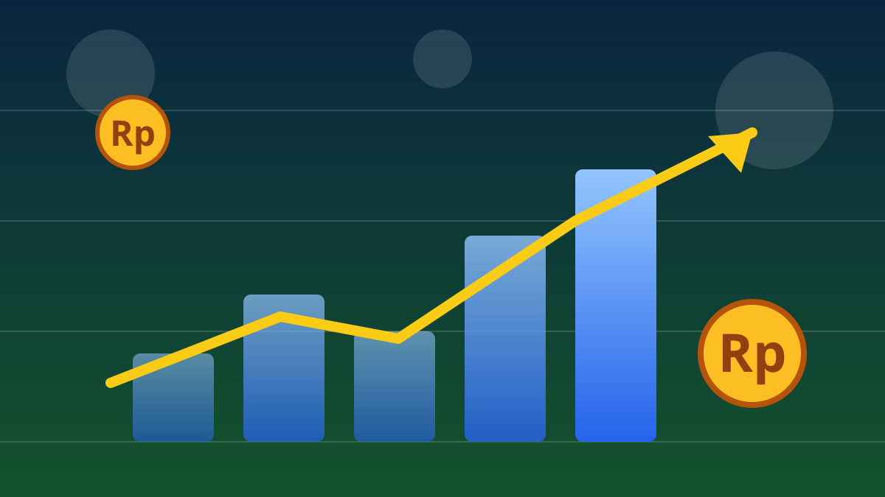

1 / 6

💰 EKONOMI
Ekonomi RI diprediksi tumbuh 5,1% — tapi ada harga yang harus dibayar
IMF baru saja revisi naik proyeksi Indonesia. Kabar bagus? Iya, tapi inflasi juga ikut naik. Spill lengkapnya, geser →
2 / 6
📊
Proyeksi 2026 naik: 5,0% → 5,1%
Dana Moneter Internasional (IMF) menaikkan proyeksi pertumbuhan ekonomi Indonesia 2026 dari 5 persen menjadi 5,1 persen dalam laporan World Economic Outlook (WEO) edisi Oktober 2026 bertajuk "Resilience Under Strain, Urgent Choices" yang dirilis Selasa (13/10). Untuk 2027, pertumbuhannya juga diperkirakan bertahan di 5,1 persen.
3 / 6
🔥
Plot twist: inflasi ikut naik ke 3,3%
Di balik revisi naik itu, IMF memperkirakan inflasi Indonesia mencapai 3,3 persen pada 2026 — naik dari realisasi 1,9 persen pada 2025 — sebelum melandai ke 2,8 persen pada 2027. Pemicunya: kenaikan harga energi dan pangan global yang bikin biaya produksi dan distribusi ikut naik.
4 / 6
🌏
RI masih di atas rata-rata Asia
Proyeksi Indonesia 5,1 persen berada di atas perkiraan pertumbuhan Asia secara keseluruhan (4,8 persen pada 2026) dan kelompok ASEAN-5 — Indonesia, Malaysia, Filipina, Singapura, Thailand — yang diproyeksikan tumbuh 4,4 persen. Di tingkat global, IMF memperkirakan ekonomi dunia tumbuh 3,1 persen pada 2026 dan 3,4 persen pada 2027, ditopang investasi teknologi terutama AI.
5 / 6
⚠️
PR-nya: defisit transaksi berjalan melebar
IMF juga memperkirakan defisit transaksi berjalan Indonesia melebar menjadi 1,6 persen terhadap PDB pada 2026, dari 0,1 persen pada 2025, seiring meningkatnya impor minyak dan gas di tengah harga minyak yang masih tinggi. Risiko lain yang disorot: konflik di Timur Tengah, ketegangan dagang, dan ketidakpastian arah suku bunga AS. Sebagai pembanding, OECD pada September 2026 juga menaikkan proyeksi pertumbuhan Indonesia menjadi 5,2 persen.
6 / 6
🤔
Efeknya ke lo apa?
Ekonomi yang tumbuh stabil artinya lapangan kerja dan peluang usaha cenderung lebih aman — kabar baik buat yang lagi cari kerja atau mulai side hustle. Tapi inflasi 3,3 persen berarti harga-harga berpotensi merangkak naik, jadi daya beli bisa terasa lebih berat, apalagi buat yang gajinya nggak naik-naik. Intinya: nabung dan atur pengeluaran tetap wajib, meski headline ekonominya kelihatan hijau.